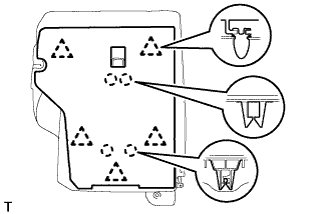
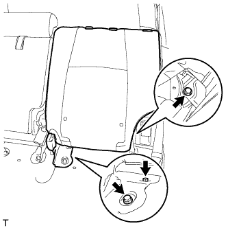

ЗАМОК РЕМНЯ БЕЗОПАСНОСТИ ЗАДНЕГО СИДЕНЬЯ № 1 В СБОРЕ (для моделей с сиденьем раздельного типа 60/40 с двойным складыванием с левой стороны) > СНЯТИЕ |
| 1. СНИМИТЕ ПОДГОЛОВНИК ЗАДНЕГО СИДЕНЬЯ В СБОРЕ |
Потяните ленту подушки заднего сиденья, освободите фиксатор и поднимите заднюю часть подушки сиденья, чтобы повернуть ее вперед.
Снимите подголовник заднего сиденья в сборе (Нажмите здесь).
| 2. СНИМИТЕ ПАНЕЛЬ ПОКРЫТИЯ СПИНКИ ЛЕВОГО ЗАДНЕГО СИДЕНЬЯ В СБОРЕ |
|  |
С помощью съемника фиксаторов расцепите 5 фиксаторов.
Освободите 4 захвата и снимите панель покрытия.
| 3. СНИМИТЕ СПИНКУ ЛЕВОГО ЗАДНЕГО СИДЕНЬЯ В СБОРЕ |
|  |
Выверните 2 болта, крепящих спинку сиденья к полу.
Сложите спинку сиденья, выверните болт из петли, а затем снимите спинку сиденья.
| 4. СНИМИТЕ ЗАМОК РЕМНЯ БЕЗОПАСНОСТИ ЛЕВОГО ЗАДНЕГО СИДЕНЬЯ № 1 В СБОРЕ |
 |
Отверните болт и снимите замок ремня безопасности.